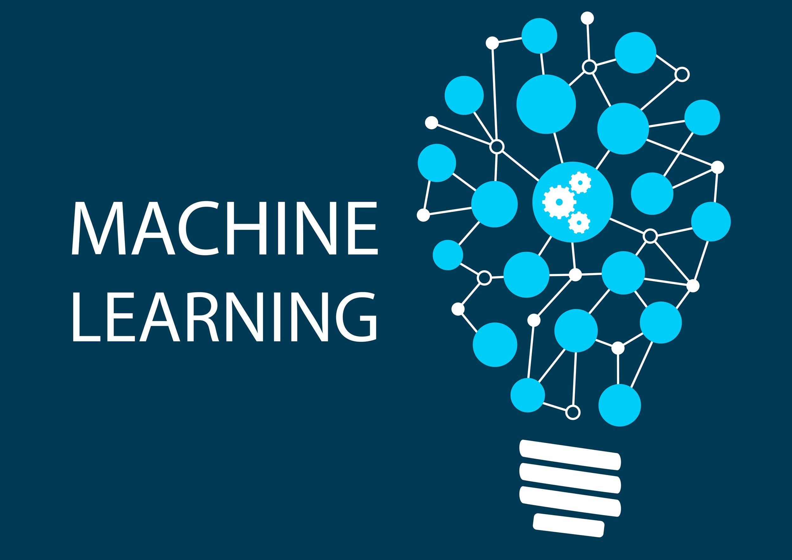

Machine Learning
Perkembangan teknologi di era globalisasi merupakan hal yang telah menjadi faktor utama terjadinya transformasi dari berbagai sektor di kehidupan makhluk hidup khususnya manusia. Belakangan ini kita terus mendengar tentang sebuah teknologi yang bertipe kecerdasan buatan atau (AI) yang belakangan ini menjadi pembahasan banyak orang karena beberapa hasil ciptaan dari manusia dengan menggunakan teknologi AI dapat mempermudah manusia dalam menyelesaikan suatu tugas contohnya seperti ChatGPT yang belakangan ini digunakan oleh banyak orang yang sebagian besar merupakan pelajar. Salah satu tonggakk penting dalam ebolusi teknologi yaitu Machine Learning yang menjadi subdisiplin dari kecerdasan buatan yang dimana hal ini membawa dampak yang signifikan dalam berbagai bidang, mulai dari bidang perindustrian hingga layanan kesehatan. Situs ini akan membahas banyak hal tentang machine learning yang mempunyai peran yang krusial dalam evolusi teknologi.
Tujuan kami mebuat website ini yaitu tentunya untuk pengetahuan tentang teknologi dengan lebih spesifik lagi dimana disini kita bisa mengtetahui tentang bagaimana proses tercipannya suatu teknologi tersebut , dalam website ini kita akan lebih mengarah ke kecerdasan buatan atau AI karena dalam era modern ini kita sering mendengar tentang teknologi AI , lalu bagaimana Artificial Itelligence ini dibuat lalau metode apa yang digunakan unutk pembuatan AI tersebut? Berikut penjelasannya
Definisi Machine Learning
Machine learning merupakan suatu teknologi dimana manusia membat mesin yang dapat berinteraksi dengan manusia secara langsung maupun juga secara tidak langsung yang didalamnya terdapat suatu algoritma dan model statistik yang digunakan sistem komputeruntuk menjalankan tugas tanpa perintah yang ekspilit. sebagai gantinya, komputer mengandalkan sebuah pola dan inferensi dimana dengan adanya machine learning masalah-masalah dalam konteks robotika, bahasa alami, matematika game, persepsis, diagnosis medis, teknik, analisis keuangan dan penalaran .Tentunya machine learning ini merupakan teknologi yang diciptakan untuk mempermudah aktivitas makhluk hidup, terlebih khususmuya dalam kehidupan manusia.
Machine Learning Application
Berikut disini kita akan membahas tentang aplikasi machine learning . Maksudnya disni kita akan membahas tentang penerapan atau pengaplikasian machine learning dalam bebrapa aplikasi yang sering orang-orang gunakannya dan berikut adalh penerapannya.
1 Goggle maps Goggle maps merupakan aplikasi peta bumi dan juga penunjuk jalan untuk mencapai suatu lokasi tertentu, hal tersebut menggunakan teknik machine learning dimana machine learning berfungsi untuk mendeteksi serta menggunakan data lokasi yang ada di perangkat digital kita lalu mendeteksi arus lalu lintas dan juga memberi arah atau rute jalan yang lebih dekat atau lebih menghemat waktu , seperti menghindari macet di jalan atau jalan pintas untuk menuju ke lokasi yang telah ditandai
2 Goggle lens Goggle lens merupakan salah satu aplikasi dari goggle yang berfungsi untuk mendeteksi objek yang dideteksi lewat kamera. Peran machine learning dalam goggle lens sangatlah penting dimana machine learning mendeteksi segala objek lewat kamera seperti furnitur, pakaian, sopt pemandangan dan benda atau objek-objek lainnya dimana saat objek paling jelas dalam POV kamera maka objek tersebut akan menjadi sebuah referensi atau petunjuk untuk pencarian . Misalnya saat kita menggunakan goggle lens dan kita menyorot sebuah bau untuk melihat merk serta tokohnya , maka saat kita scan objek tersebut, goggle akan menampilkan bebrapa hasil yang relevan agar kita dapat informasi yang kita inginkan tentang objek tersebut
3 Goggle Translate Goggle translate merupakan tools dari goggle yang berfungsi penerjemah dalam berbagai bahasa seperti inggirs, mandarin, melayu dan masih banyak bahasa lainnya dimana metode teknologi machine learning sangat diperlukan dalam penggunaan goggle translate ini, sistemn komputer mendeteksi kata-kata yang dimasukan ke bagian yang ingin diterjemahkan dan mencari terjemahan kata tersebut di kamus besat dan di tampilkan ke bagian bahasa yang ingin diterjemahkan . Fungsi lainnya juga yaitu mendeteksi kalimat-kalimat agar selain diterjemahkan, kalimat juga bisa ttap dapat berhubungan atau masuk akal Contoh saat kita menejermahkan bahasa indo gerald, apakah kamu baik-baik saja? - di tranlate ke bahasa inggris = Gerald are you alright?
4 Facebook dan Instagram ads Media sosial yang sudah sangat terkenal seerti facebook dan instagram menrapkan ads yang menarik perhatian pengguna dimana kedua media sosial tersebut menggunakan teknologi machine learning, cara kerjannya sangat mudah yaitu sistem komputer menentukan iklan sesuai dengan history pencarian dari pengguna media sosial tersebut .Contohnya disini yaitu saat kita baru saja mencari bebrapa hal tentang alat-alat teknologi maka setelah itu pengguna akan menemukan iklan tentang penjualan barang-barang digital. Dengan menerapkan hal tersebut pihak media sosial berharap agar pengguna membei produk yang ditawarkan dari iklan yang muncul
5 Filter Instagram Siapa sangka bahwa filter instagram juga menggunakan teknologi machine learning dimana machine learnig ini mendeteksi wajah atau objek yang ditentukan dari filiter yang dibuat sehingga objek yang dituju muncul di kamera maka filter akan muncul, hal ini paling sering sekali digunakan untuk wajah manusia .Contoh kecilnya seperti saat kita menggunakan filter blury face dalam instagram , maka saat kita mengarahkan wajah kita ke kamera, wajah kita akan blur sesuia filter yang di pasang
Algoritma Machine Learning
Dalam penggunaan pembelajaran mesin, algoritma, atau urutan proses statistik, dilatih untuk menemukan pola dalam sejumlah besar data dengan tujuan mengambil keputusan atau membuat prediksi berdasarkan data tersebut. Untuk melakukan pekerjaannya, sistem kecerdasan buatan menggunakan algoritma pembelajaran mesin untuk menghasilkan model dari kumpulan data. biasanya memprediksi nilai output berdasarkan data input. Classification dan regression adalah dua proses utama yang digunakan oleh algoritma pembelajaran mesin. Berikut adalah bebrapa cara kerja dari machine learning
1 Decision Process. Algoritma dari machine learning sering digunakan dalam membuat prediksi atau klasifikasi. Sesuai cara kerjanya algoritma akan menghasilkan perkiraan dari suatu pola dalam sebuah data
2 Model optimize process. Model dapat lebih ccok dengan suatu data point dalam sebuah pelatihan, bobot akan disesuaikan agar perbedaan antara contoh yang diketahui dan estimasi modelnya dapat berkurang. Dalam prosses ini, algoritma akan terus mengulangi proses evaluasi serta pengoptimalan, hal terssebut dapat memperbarui bobot secara mandiri hingga ambang batas akurasi terpenuhi
3 Error function. Error function dalam algoritma machine learning selalu dignakan untuk mengenaluasi suatu prediksi dari model jika ada contoh yang diketahui, yang dimana error functin ini dapat memungkinkan untuk membandingkan nilai kekuatan dari suatu model yang telah ditetapkan
Prosses Machine Learning
1 mengidentifikasi data. Identify data merupakan proses awal dalam machine learning dimana kita harus mengidentifikasi sebuah masalah yang akan dipecahkan dengan cara pendekatan logis dan juga matematis. mengidentifikasi data merupakan proses yang sangat penting, agar alur atau yang telah kita buat tidak keluar dari awal pembahasan
2 Mempersiapkan data. Konsepnya yaitu semakin banyak data yang disiapkan, maka output yang dihasilkan ileh machine learning akan lebih valid. Dalam proses ini terdapat dua metode yaitu data mining dan web scrapping
3 Memilih algoritma machine learning. Disini kita harus memilih algoritma yang cocok untuk machine learning, agar machine learning dapat menangani duatu masalah dengan benar. Salah satu metode yang paling sering digunakan dalam proses ini adlah supervised learning yang berguna untuk memprediksi masa depan.
4 Pembagian data. Saat beberapa prosses di atas telah tercapai maka wajib dilakukan pembagian data,, tujuannya agar dapat mempermudah proses selanjutnya dan juga agar model dari machine learning leibih mudah untuk diidentifikasi
5 Pelatihan. Proses train merupakan proses yang paling penting dalam pembuatan machine learning, dalam proses ini machine learning akan di latih berdasarkan data yang sudah di prosses, Pelatihan mesin dilakukan agar mesin dapat menentukan data yang masuk sesuai dengan klasifikasinya
6 Evaluasi. Setelah pelatihan dilakukan, machine learnig akan dievaluasi kembali untuk memastikan apakah data yang telah diinput di machine learning sudah benar dan sudah sesuai dengan yang diajarkan
7 Prediksi atau uji coba. Dalam proses ini machine learning akan diuji coba, caranya dengan melihat hasil prediksi yang dihasilkan dari machine learning, proses ini juga dapat memastikan kalau machine learning sudah bekerja dengan baik
8 Deploy. Ini merupakan proses tahap finalisasi dalam pembuatan mahine learning dimana model machine learning langsung diterapkan kepada masalah untuk melihat prediksi data.
Deep Learning
Dan berikut disini kita akan membahas sedikit soal deep learning karena deep learning mempunyai banyak kesamaan dengan machine learning. Jadi deep learning merupakan suatu metode yang mengajarkan sistem komputer untuk memproses sebuha data seperti layaknya cara kerja otak manusia, jadi sistem kmputer yang menggunakan metode deep learning adalah metode sistem kerja dari otak manusia. Model dari deep learning dapat mengenali pola yang bersifat kompleks dari sebuah gambar, suara, teks dan juga data-data lainnya dan menghasilkan wawsan serta prediksi yang akurat. Metode deep learning ini sangatkah berguna, mengapa?. Teknologi deep learning mendorong banyak aplikasi AI yang sering digunakan dalam produk sehari-hari seperti asisten digital, pengendali arak jauh televisi yang diaktifkan melalui suara serta pengenalan wajah otomatis .Deep learning biasanya digunakan dalam bidang otomotif, penelitian medis, elektronik, manufaktur dan bebrapa bidang lainnya
Supervised vs Unsupervised Learning
Supervised vs Unsupervised Learning Supervised learning (pembelajaran terawasi): Supervised learning adalah pembelajaran model dengan variabel input (katakanlah, x) dan variabel output (katakanlah, Y) dan algoritma untuk memetakan input ke output. Yaitu, Y = f(X). Mengapa supervised learning? Tujuan dasarnya adalah untuk memperkirakan fungsi pemetaan (yang disebutkan di atas) dengan baik sehingga ketika ada data input baru (x) maka variabel output yang sesuai dapat diprediksi. Disebut supervised learning karena proses pembelajaran (dari training dataset) dapat dianggap sebagai seorang guru yang mengawasi seluruh proses pembelajaran. Dengan demikian, " learning algorithm" secara iteratif membuat prediksi pada data pelatihan dan dikoreksi oleh "guru", dan pembelajaran berhenti ketika algoritme mencapai tingkat kinerja yang dapat diterima (atau akurasi yang diinginkan). Contoh Supervised Learning Misalkan ada sebuah keranjang yang berisi buah-buahan segar, tugasnya adalah menyusun jenis buah yang sama di satu tempat. Misalkan juga buah-buahan tersebut adalah apel, pisang, ceri, anggur. Misalkan seseorang sudah mengetahui dari pekerjaan sebelumnya (atau pengalaman) bahwa, bentuk setiap buah yang ada di dalam keranjang, maka mudah bagi mereka untuk menyusun jenis buah yang sama di satu tempat. Di sini, pekerjaan sebelumnya disebut sebagai training data dalam terminologi Data Mining. Jadi, sistem ini mempelajari berbagai hal dari data training. Jenis informasi ini diuraikan dari data yang digunakan untuk melatih model. Jenis pembelajaran ini disebut dengan Supervised Learning. Unsupervised Learning (Pembelajaran Tanpa Pengawasan): Unsupervised learning adalah ketika hanya ada data input (misalnya, X) dan tidak ada variabel output yang sesuai. Mengapa Unsupervised Learning? Tujuan utama dari Unsupervised learning adalah untuk memodelkan distribusi data dan untuk mempelajari lebih lanjut tentang data tersebut. Disebut demikian karena tidak ada jawaban yang benar dan tidak ada "guru" (tidak seperti supervised learning). Algoritma dibiarkan bekerja sendiri untuk menemukan dan menyajikan struktur yang menarik dalam data.
Contoh Unsupervised Learning Sekali lagi, misalkan ada sebuah keranjang yang berisi buah-buahan segar. Tugasnya adalah mengatur jenis buah yang sama di satu tempat. Kali ini tidak ada informasi tentang buah-buahan tersebut sebelumnya, ini adalah pertama kalinya buah-buahan tersebut dilihat atau ditemukan. Jadi bagaimana cara mengelompokkan buah-buahan yang sama tanpa pengetahuan sebelumnya tentang buah-buahan tersebut? Pertama, karakteristik fisik dari buah tertentu dipilih. Misalnya warna. Kemudian buah disusun berdasarkan warna. Kelompok-kelompok tersebut akan menjadi seperti yang ditunjukkan di bawah ini: KELOMPOK WARNA MERAH: apel & buah ceri. KELOMPOK WARNA HIJAU: pisang & anggur. Jadi sekarang, ambil karakter fisik lainnya, katakanlah, ukuran, maka kelompoknya akan menjadi seperti ini.
WARNA MERAH DAN UKURAN BESAR: apel.
WARNA MERAH DAN UKURAN KECIL: buah ceri.
WARNA HIJAU DAN UKURAN BESAR: pisang.
WARNA HIJAU DAN UKURAN KECIL: buah anggur.
>Di sini, tidak perlu mengetahui atau mempelajari apa pun sebelumnya. Artinya, tidak ada data training dan tidak ada variabel respon. Jenis pembelajaran ini dikenal sebagai Unsupervised Learning.
Feature Engineering
Feature Engineering Feature Engineering (FE) adalah langkah preprocessing dalam machine learning yang digunakan untuk mengubah data mentah menjadi fitur yang dapat digunakan untuk merancang model prediktif pada machine learning atau statistical modelling. Feature Engineering juga merupakan proses menggunakan pengetahuan domain dari data dalam rangka membuat fitur yang bertujuan untuk membuat algoritma pembelajaran bekerja. Namun, dalam rangka membangun classifier atau algoritma pembelajaran prediktif, input perlu disesuaikan sedemikian rupa sehingga algoritma dapat memahaminya. Hal tersebut memakan waktu yang cukup lama dalam proses membangun classifier. Berikut merupakan kerangka umum Feature engineering untuk klasifikasi. Feature Engineering dilakukan setelah scrubbing dan persiapan data, tetapi sebelum menyeleksi fitur. Urutan tersebut menunjukkan bahwa Feature Engineering (FE) memiliki peran penting dalam memberikan representasi data yang lebih baik kepada predictive learning algorithm. Feature Engineering dibagi menjadi 4 tahap, yaitu:
Pembuatan Fitur. Merupakan proses dalam rangka menghasilkan fitur baru berdasarkan variabel yang sudah ada. Variabel yang ditentukan sebaiknya memiliki manfaat yang signifikan bagi algoritma pembelajaran prediktif.
Transformasi Fitur Langkah ini melibatkan penyesuaian variabel guna meningkatkan akurasi dan performa algoritma pembelajaran prediktif.
Ekstraksi Fitur proses menghasilkan variabel baru dengan cara mengekstraknya dari raw data guna mengurangi volume data sehingga dapat mempermudah pengelolaan data.
Pemilihan Fitur Proses mengidentifikasi dan menentukan fitur yang paling sesuai dari data serta menghapus fitur yang tidak relevan atau kurang penting.
Seperti yang telah dipaparkan sebelumnya, Feature Engineering merupakan proses yang memakan banyak waktu, monoton, dan seringkali merupakan proses trial and error. Guna memahami kelemahan Feature Engineering, diciptakan beberapa alat atau sistem yang dapat membantu dalam mempercepat proses Feature Engineering. Alat-alat tersebut berfokus untuk mengekstraksi atau mengubah data mentah menjadi sesuatu yang lebih berguna dalam model prediktif. Alat yang dapat digunakan untuk membantu proses Feature Engineering yaitu Turi, Azure Machine Learning Studio, ZOMBIE, FeatureFU, COLUMBUS, DeepDive, FeatureForge, dan FeatureSmith.
Ethical Consideration
Ethical Consideration Ketika analis memulai proyek penelitian dengan menggunakan metode apa pun, selalu penting untuk mempertimbangkan segala kemungkinan masalah etika yang berkaitan dengan pengumpulan, akses, penggunaan, dan penyimpanan data. Hal ini membantu mengurangi potensi bahaya bagi semua individu yang terlibat dalam penelitian dan membantu menjaga penerimaan publik terhadap produksi penelitian dan statistik, serta memungkinkan peneliti untuk mengakses dan memanfaatkan data secara efisien yang mendukung produksi statistik untuk kepentingan publik. Isu-isu etika ini sangat penting ketika menggunakan metode yang lebih kontemporer seperti pembelajaran mesin, karena tidak hanya menimbulkan pertimbangan etika data tradisional seperti transparansi dan masalah privasi, tetapi juga masalah-masalah baru. Ketika algoritme digunakan, mungkin akan lebih sulit untuk menjaga dari kesalahan atau bias, yang mungkin terjadi akibat interaksi manusia dengan model (misalnya, pengkodean, keputusan desain, atau input data), dan hal tersebut dapat memengaruhi keluaran sistem. Selain itu, temuan penelitian dapat menjadi bias atau salah jika model digunakan di luar tujuan yang dimaksudkan, atau jika output mesin tidak ditinjau dan diperiksa validitasnya secara menyeluruh sebelum digunakan.
Tentu saja, terlepas dari pertimbangan etika ini, ada banyak manfaat yang dapat diperoleh dari penggunaan metode pembelajaran mesin. Mengambil pendekatan yang mempertimbangkan etika dalam setiap proyek membantu menjaga kepercayaan publik dalam penggunaan data untuk penelitian dan statistik secara lebih umum, memungkinkan para peneliti untuk memanfaatkan kekuatan data untuk mendukung penelitian yang bermanfaat bagi publik. Apa pun tahap proyek pembelajaran mesin, selalu masuk akal untuk mendiskusikan kemungkinan masalah etika yang mungkin muncul dengan peneliti lain. Hal ini berlaku jika berpikir untuk memulai proyek baru menggunakan pembelajaran mesin, dalam proses merancang penelitian, atau bahkan jika sudah mulai membuat, atau menerapkan, sistem pembelajaran mesin. Tentu saja, akan selalu bermanfaat untuk mulai memikirkan tantangan etika sedini mungkin dalam penelitian. Dengan melakukan hal ini, kita dapat menerapkan etika data yang baik.
Otoritas Statistik Inggris menyediakan alat penilaian mandiri etika bagi para peneliti, yang digunakan untuk memberdayakan para peneliti dalam mengidentifikasi dan meninjau tantangan etika yang terlihat dalam proyek penelitian. Panduan ini melengkapi alat penilaian mandiri etika dan juga menyediakan daftar periksa tingkat tinggi yang dapat digunakan untuk memastikan bahwa setiap penelitian atau proyek statistik yang menggunakan teknik pembelajaran mesin bertanggung jawab secara etis.
Newest Machine Learning Trend
Newest machine learning trend GraphCast, algoritma prediksi cuaca berbasis pembelajaran mesin dan kecerdasan buatan (AI) yang dikembangkan oleh tim peneliti DeepMind Google, dianggap sebagai kemajuan baru dalam industri laporan cuaca. Dengan tingkat kebenaran 90 persen, GraphCast dapat memprediksi variabel cuaca untuk kurun waktu 10 hari dalam waktu kurang dari satu menit, mengungguli teknologi prediksi pola cuaca konvensional. GraphCast mengambil dua kondisi cuaca terkini dari Bumi—termasuk variabel dari waktu pengujian dan enam jam sebelumnya—dan menggunakan data ini untuk memprediksi cuaca untuk enam jam ke depan, memberikan program kecerdasan buatan keuntungan dalam akurasi dan kecepatan prediksi. GraphCast telah menunjukkan kemanjurannya dalam praktik, seperti yang dilaporkan Engadget Rabu (15/11/2023), dengan memprediksi pendaratan Badai Lee di Long Island sepuluh hari sebelum terjadi. Kecepatan prediksi GraphCast menjadi lebih baik karena model prediksi cuaca tradisional tidak perlu mengatasi dinamika fluida dan kompleksitas fisika. Kelebihan GraphCast tidak terbatas pada kecepatan dan skala prediksi. Selain itu, GraphCast diharapkan semakin meningkat dalam memprediksi osilasi pola cuaca yang terkait dengan perubahan iklim karena program ini dapat memprediksi peristiwa cuaca buruk seperti siklon tropis dan gelombang suhu ekstrem.
Dalam waktu dekat, GraphCast, atau inti algoritma ini, mungkin menjadi layanan yang dapat diakses secara publik. Sebuah laporan menunjukkan bahwa Google sedang mempertimbangkan untuk memasukkan GraphCast ke dalam produknya. Inovasi yang didorong oleh kebutuhan akan pemodelan badai yang lebih baik juga telah terjadi. Salah satu contohnya adalah pembuatan superkomputer di luar angkasa oleh National Oceanic and Atmospheric Administration (NOAA) untuk memberikan prakiraan cuaca yang lebih akurat dan intensitas badai yang lebih baik.
Dan itulah penjelasan tentang teknologi Machine Learning, jadi machine learning merupakan teknologi yang sebenarnya ada di sekitar kita dan juga machine learning merupakan metode yang penting dalam pembuatan alat-alat teknologi yang canggih apalagi teknologi yang paling sering dibicarakan yaitu Kecerdasan buatan atau AI yang tentunya jika tidak ada kontribusi dari machine learning ini tentunya sistem dari Kecerdasan buatan tersebut tidak akan bisa beroperasi, machine learnnig memang merupakan metode ang terbilang kompleks dengan melibatkan banyak matematis didalamnya, tapi tentunya machine learning ini merupakan teknologi yang sangat maju yang tentunya dapat juga berkembang, mengingat konsepnya yang kompleks sehingga masih banyak hal yang belum dapat dikembangkan dalam konsep machine learning ini, kami harap dengan pembahasan tentang machine learning ini dapat menambah wawasan kita semua tentang perkembangan teknologi yang ada di kehidupan kita ini.
Sekian Terimakasih